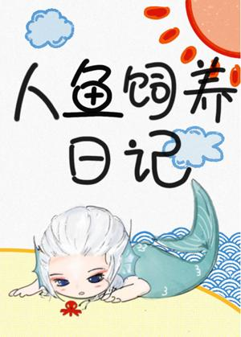

En el año 487 d. C., un crucero se topó con una tormenta en alta mar. Un pasajero desapareció y se desconoce su paradero. Desde ese día, una sirena apareció en esas aguas.
Lance abrió los ojos y se encontró transformado en una sirena blanca. Yacía de espaldas, contemplando el cielo agitado a través del agua azul. Su larga cola estaba adornada con delicadas aletas blancas, y sus escamas brillaban con la luz del mar. Soltó una burbuja. En su primer día como sirena, se preguntó si alguien podría explicarle… ¿cómo se dan la vuelta los peces?
El Señor del Océano despertó de las profundidades.
Vio una hermosa perla que irradiaba luz blanca y que caía suavemente en sus brazos. "Hola, pececito", susurró.